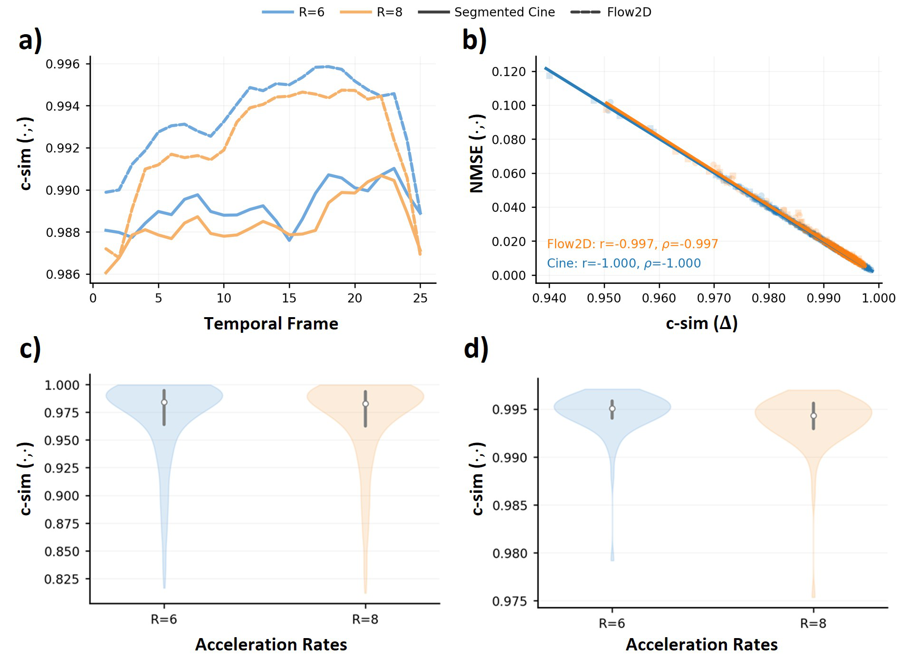
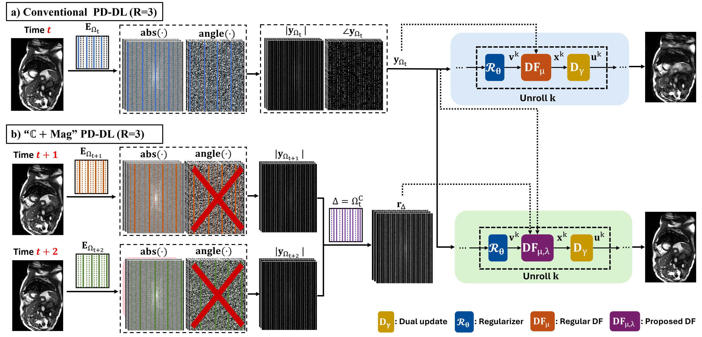
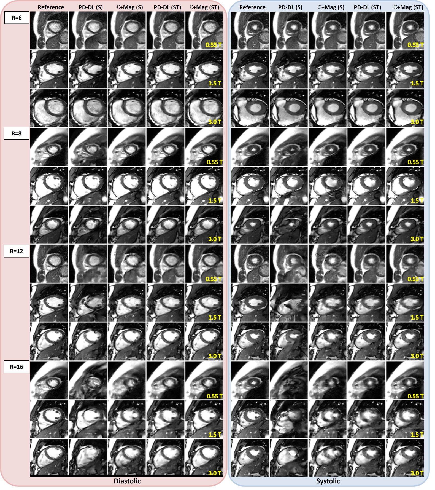
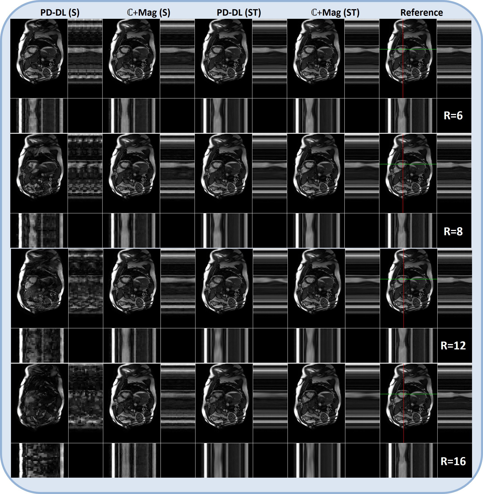
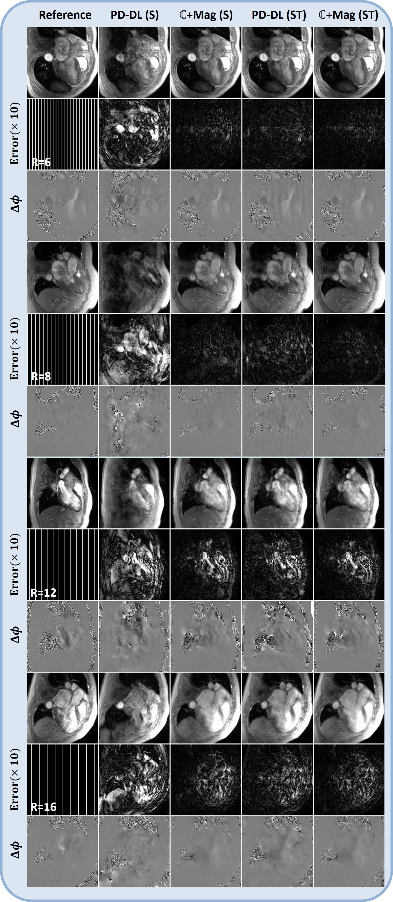
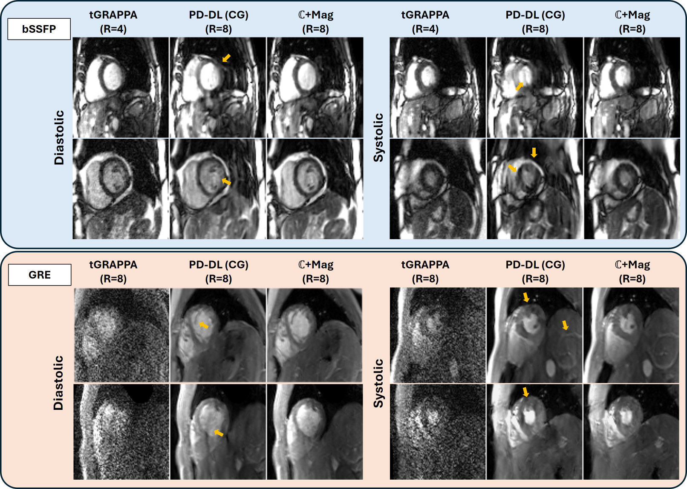
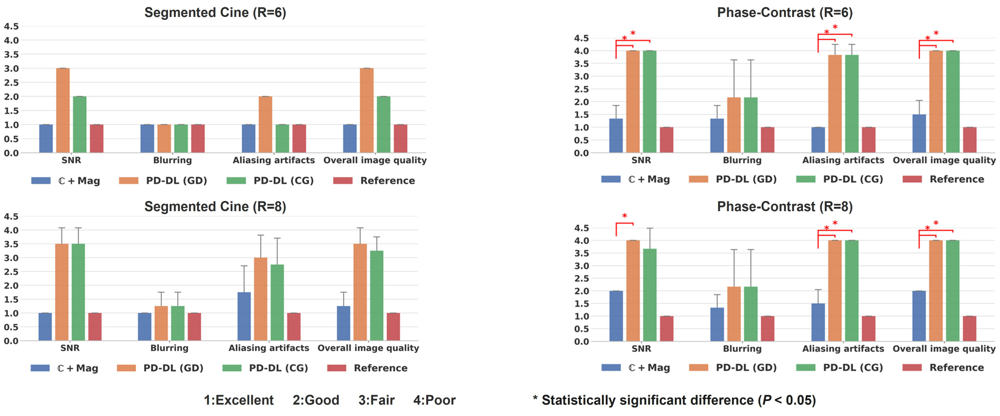
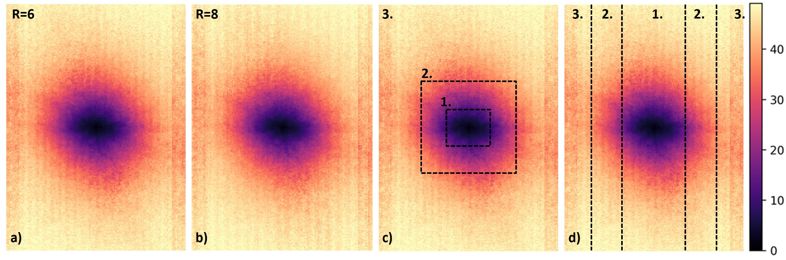

Two kinds of measurement, one reconstruction
MRI reconstruction methods for undersampled k-space naturally use the complex-valued measurements. Work on sparse phase retrieval shows that magnitude-only measurements can carry complementary information, but MRI has rarely used them because there was no practical way to get informative magnitudes without extra scan time.
We show that in accelerated steady-state dynamic MRI, multi-coil k-space magnitudes are highly consistent across time-frames. Building on this, we propose ℂ+Mag, a magnitude-informed physics-driven deep learning (PD-DL) reconstruction. It unrolls ADMM with a new magnitude-aware data-fidelity step, using quadratic smoothing and Nesterov momentum to handle the non-differentiable, non-convex magnitude term.
On retrospectively undersampled cine and phase-contrast flow MRI, and on prospectively undersampled real-time cine, ℂ+Mag suppresses artifacts better, recovers sharper anatomy and preserves phase better than conventional PD-DL. Blinded cardiologist readings support these results.
k-space magnitude barely changes from one cardiac phase to the next
Using breath-hold segmented cine from OCMR and phase-contrast Flow2D from CMRxRecon2025, we measured the cosine similarity between the true multi-coil k-space magnitude |y| of a frame and the magnitude r taken from its neighbors, on the lines the frame did not acquire (ΩC).
The mean similarity stays above 0.98 across all cardiac phases at R = 6 and 8 for both datasets, and it stays high coil by coil. Because NMSE ≈ 2(1 − c-sim) when the energies match, high similarity means low magnitude error on exactly the locations the reconstruction is missing.
Similarity is highest where the energy is: near the k-space center.
Median c-sim by radial band, segmented cine. Flow2D: 0.995 / 0.882 / 0.723.

Where the extra magnitudes come from
Cine uses a time-interleaved, shifted equidistant pattern: each frame samples every R-th phase-encode line, shifted by one line per frame. Pick a target frame and an acceleration rate. For every line the target skipped, ℂ+Mag takes the magnitude from the closest frame that sampled it.
A data-fidelity term for complex and magnitude measurements

We add a magnitude least-squares term to the standard regularized objective:
The first term enforces consistency with the acquired complex data. The second enforces consistency with the auxiliary magnitudes on Δ ⊆ ΩC. The regularizer ℛ is learned. ADMM splits the problem into three steps, unrolled for 10 iterations:
A time-embedded U-Net (TE-UNet), either spatial-only (one frame) or spatiotemporal (R frames). It is identical in PD-DL and ℂ+Mag.
Q is the objective above plus μ‖x − vk + uk−1‖². It is solved with 10 Nesterov-accelerated gradient steps, and λ, μ, β and the step sizes η are all learned per unroll.
A standard ADMM dual ascent with a learnable γ.
Making |·| trainable
The magnitude operator is not differentiable at zero, so we use quadratic smoothing (Quad-S) and take the gradient with CR-calculus:
Quad-S beat Smooth-ℓ1, Pseudo-Huber and Log-Exp smoothing in our ablations.
Taming non-convexity
Plain gradient descent on the magnitude term can settle in poor local minima. A Nesterov look-ahead step stabilizes the inner solver:
At R = 8, Nesterov reached 37.55 dB PSNR, against 37.30 for Polyak momentum, 36.13 for plain GD and 32.79 for Adam.
The network, the regularizer and the parameter count (2.026 M) are the same as the PD-DL baseline. Only the data-fidelity step changes, so the method plugs into spatial or spatiotemporal regularizers and into other unrolling schemes.
Gains grow with the acceleration rate
Cine (OCMR; 0.55 T, 1.5 T and 3 T; 46 training / 14 test subjects) and Flow2D (CMRxRecon2025; 20 / 8) at R ∈ {6, 8, 12, 16}, without ACS lines. The oracle uses the true magnitudes and marks the upper bound of the formulation; it is not achievable in practice.
Table II
Qualitative comparisons



Better magnitude constraints also give better velocity phase
The constraint only touches magnitudes, yet the velocity-encoding phase difference Δϕ = ∠(x2 ⊙ x1*) improves too. The charts show the mean absolute wrapped phase error over the foreground, mean ± SD over subjects, with lower being better. Both panels share one scale.
Spatial-only regularizer
Spatiotemporal regularizer
Table III, MAPEΔϕ in radians.
Real-time cine at R = 8, trained without fully sampled data

Free-breathing real-time cine has no fully sampled reference, so these models were trained with multi-mask SSDU self-supervision.
- bSSFP (NHLBI repository, 1.5 T). Acquired at R = 4 and further undersampled to R = 8. ℂ+Mag at R = 8 matches the image quality of the clinical tGRAPPA reconstruction at R = 4.
- GRE (acquired locally, 3 T, R = 8). tGRAPPA shows heavy artifacts and PD-DL loses detail. ℂ+Mag keeps cardiac structures in both systole and diastole.
Real-time imaging is a natural fit: neighboring frames are acquired one after another, so their magnitudes are reliable even with irregular heart rhythms.
Measurements and reader scores match the reference

Cardiac function and flow (Table IV)
| Metric | BH cine ℂ+Mag R=8 | BH cine Reference | RT bSSFP ℂ+Mag R=8 | RT bSSFP tGRAPPA R=4 | RT GRE ℂ+Mag R=8 | RT GRE Breath-hold |
|---|---|---|---|---|---|---|
| EDV (mL) | 119.6 (26) | 121.8 (25) | 98.7 (14) | 100.7 (13) | 120.7 (20.7) | 121.3 (19) |
| ESV (mL) | 48.3 (19) | 48.4 (18) | 75.0 (30) | 78.3 (23) | 36.7 (12.8) | 37.0 (13) |
| SV (mL) | 71.3 (19) | 73.2 (19) | 23.7 (16) | 22.3 (11) | 84.0 (10.5) | 84.3 (8) |
| EF (%) | 59.8 (11) | 60.3 (11) | 26.0 (21) | 23.0 (14) | 70.3 (6.8) | 70.2 (7) |
| EDM (g) | 96.2 (7) | 94.1 (18) | 103.7 (27) | 103.3 (28) | 139.3 (18.3) | 139.7 (34.3) |
| ESM (g) | 93.3 (16) | 95.9 (18) | 121.3 (14) | 121.7 (15) | 138.7 (25.5) | 138.7 (27.8) |
| Flow2D, descending aorta | ℂ+Mag R=6 | ℂ+Mag R=8 | Reference R=1 |
|---|---|---|---|
| Net flow volume (mL) | 28.7 (13.4) | 28.3 (13.2) | 28.7 (12.9) |
| Forward flow volume (mL) | 30.0 (13.1) | 29.8 (13.2) | 29.2 (12.7) |
| Backward flow volume (mL) | 1.3 (0.85) | 1.5 (0.4) | 0.5 (0.5) |
| Regurgitant fraction (%) | 5.79 (5.8) | 6.14 (4.0) | 2.4 (2.4) |
| Cardiac output (L/min) | 1.85 (0.87) | 1.83 (0.86) | 1.86 (0.84) |
Mean (SD). Paired t-test: no significant difference between ℂ+Mag and the reference on any metric (P > 0.05).
What matters, and what doesn't
Design choices at R = 8 (Table V)
The proximal network matters little; even a ResNet with shared DF parameters gets 35.8 dB, far above PD-DL's 29.9 dB. The solver and the unrolling scheme matter more. PGD with 10 inner steps has the same DF budget as ADMM and still trails it.
Which neighbors to use (Table VI-b)
More coverage beats proximity: spreading k = 2 neighbors farther apart (Far) beats the nearest two. At a fixed location, closer frames are more reliable (t+1 > t+3 > t+5). Every configuration beats PD-DL, even without full k-space coverage.

Which frequencies help (Table VI-a, PSNR)
| Magnitude region | 2D R=6 | 2D R=8 | PE R=6 | PE R=8 |
|---|---|---|---|---|
| All of Δ | 40.69 | 38.67 | 40.69 | 38.67 |
| Low error (1) | 39.04 | 37.26 | 39.64 | 37.84 |
| Mid error (2) | 34.88 | 30.75 | 34.80 | 30.14 |
| High error (3) | 34.73 | 30.26 | 34.42 | 30.28 |
The low-frequency, low-error magnitudes give most of the gain. Using all of Δ still wins, so noisier high-frequency magnitudes help rather than hurt.
Cost (Table VII)
| Method | DF steps | E / Eᴴ evals | Params | Inference (ms) | Training (ms) | Inference mem (MB) | Training mem (GB) |
|---|---|---|---|---|---|---|---|
| Conventional PD-DL | 100 | 200 | 2.026 M | 163.9 ± 1.1 | 526.5 ± 18.0 | 189.2 | 5.8 |
| ℂ+Mag (ADMM) | 100 | 400 | 2.026 M | 189.1 ± 4.8 | 569.6 ± 46.9 | 195.6 | 9.4 |
| ℂ+Mag (VSQP) | 100 | 400 | 2.026 M | 187.9 ± 5.5 | 561.6 ± 40.9 | 195.2 | 9.4 |
| ℂ+Mag (PGD, 1 iter) | 10 | 40 | 2.026 M | 104.7 ± 1.2 | 296.9 ± 19.5 | 194.8 | 6.1 |
| ℂ+Mag (PGD, 10 iters) | 100 | 400 | 2.026 M | 174.9 ± 38.4 | 534.2 ± 241.1 | 204.7 | 9.4 |
Per sample. ℂ+Mag adds about 25 ms (15%) at inference with no extra parameters.
Limitations
The method relies on k-space magnitudes staying stable over time. That holds for steady-state imaging such as cine, flow and possibly carotid flow. It is weaker for segmented cine with irregular rhythms, where real-time cine is preferred, and for non-steady-state scans such as perfusion or DCE, where the signal changes substantially from frame to frame.
BibTeX
@article{saberi2026cplusmag,
title = {Harnessing Magnitude-Only and Complex Measurements for Improved
Dynamic {MRI} Reconstruction with Learned Priors},
author = {Saberi, Mahdi and Al{\c{c}}alar, Ya{\c{s}}ar Utku and G{\"u}lle, Merve
and Shenoy, Chetan and Ak{\c{c}}akaya, Mehmet},
journal = {IEEE Transactions on Biomedical Engineering},
year = {2026},
doi = {10.1109/TBME.2026.3743233}
}
This paper extends our IEEE ISBI 2026 paper, Revisiting MRI reconstruction using a combination of complex and magnitude measurements with learned priors.